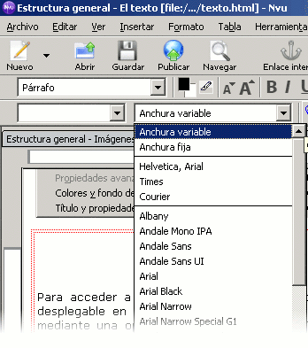
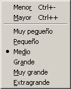

La base>>Texto - Tipos y Cuerpos

N|VU nos va a facilitar muchísimo el trabajo traduciendo nuestras selecciones en un entorno visual a etiquetas HTML. Además puede hacerlo de dos formas diferentes: utilizando sólo etiquetas HTML o utilizando también etiquetas CSS (Hojas de estilo en cascada). Recuerda que si ésta es tu primera toma de contacto con la creación de páginas web sería preferible que desactivaras la utilización de CSS.
Por otra parte, ahora que ya sabes la diferencia entre un
salto de renglón (<br>)
y un salto de
párrafo (<p>)
tendrás que tener en
cuenta un pequeño detalle: si estás trabajando en
cualquier modo que no sea el párrafo, N|VU
interpretará las pulsaciones de la tecla  como
saltos de
renglón.
como
saltos de
renglón.
Para
que introduzca saltos de párrafo tendrás que
tener cuidado de que en la zona izquierda de la barra de herramientas
aparezca marcado el párrafo
como forma de inserción de texto. Siendo así, el
programa interpretará la pulsación simple de la
tecla como
salto de
párrafo. Si quieres que se produzca únicamente un
salto de renglón tendrás que pulsar las teclas  +
+
El trabajo con procesadores de texto nos ha hecho adquirir una cierta habilidad en la maquetación o tratamiento del aspecto visual del texto. Esta situación se ha extendido también a la creación de documentos para la web. Si bien esto ha tenido una parte positiva, en tanto que ha ampliado el control sobre el aspecto visual de nuestras producciones también ha tenido una parte negativa: hemos perdido de vista una parte importante de la estructura de la información. Si te cuesta entender lo anterior puede que te resulte más fácil si te haces una pregunta: ¿podría un ciego interpretar correctamente un texto en el que los elementos que deseamos resaltar están en un tamaño más grande o en un color diferente?
Está claro que los elementos visuales son importantes, pero lo que no debemos perder nunca de vista es la organización de la información, de manera que siempre quede organizada de una forma clara, ordenada y comprensible, incluso si la despojamos de los atributos visuales.
Una vez hecha la salvedad anterior vamos a comenzar un recorrido por los recursos de los que disponemos para modificar el aspecto de un documento html Las primeras operaciones sobre las que podríamos practicar serían las referentes a la modificación del tipo de letra y su tamaño (al que se denomina cuerpo).

Para acceder a los tipos de letra disponemos de las dos posibilidades que se muestran en las imágenes:
 que nos da acceso a las fuentes instaladas.
que nos da acceso a las fuentes instaladas.Tanto si estás trabajando en Windows como si lo haces en Linux verás que los dos primeros grupos son idénticos ya que se refieren a grandes categorías el primero y a las principales familias de letras el segundo, pero en cuanto empezamos a desarrollar el listado vemos que las coincidencias desaparecen, ya que las fuentes empleadas en ambos sistemas son diferentes, por lo que no te recomiendo que utilices fuentes especiales de las que aparecen en el listado inferior.
Si lees las siguientes anotaciones de estilo podrás entender las razones de esta recomendación.
¿Cuántos tipos de letra tienes instalados en tu ordenador? ¿Cincuenta?... ¿Ochenta?... ¿Más de cien?...
Seguramente estarás pensando que tienes un montón de posibilidades a la hora de diseñar tus páginas... pero, ¿qué ocurrirá cuando un visitante de tu página no tenga en su ordenador esa fuente caligráfica tan maravillosa con la que tu página lucía tan espectacular?
Lo que sucederá es que el navegador del visitante volverá a darle formato a toda la página utilizando la fuente por defecto, que habitualmente suele ser de la familia serif o Times New Roman, ... y adiós a tu preciosa composición de la página.
Teniendo en cuenta lo anterior la recomendación es que te ciñas a las fuentes que están instaladas en la mayoría de los equipos: Times y Arial-Helvética>
Tras esta recomendación funcional vamos a entrar en una segunda anotación de claro matiz estético:
Y ahora una pregunta: ¿has visto alguna vez una de esas cuartillas de publicidad de una imprenta que acaba de comprar un nuevo ordenador? Digo lo del ordenador porque es sorprendente la cantidad de fuentes diferentes que caben en tan poco papel,... al fin y al cabo lo importante es lo potente que es el ordenador, no que podamos enterarnos de lo que pone. Así que ya sabes, una de las formas de conseguir que tu página resulte impresentable es mezclar diez o doce tipos de letra,... aunque puede que tengas la suerte de que el navegador del visitante las sustituya por la fuente por defecto ;-)
Además
del tipo de letra podemos jugar con el cuerpo de las mismas, esto es,
su tamaño. Antes de recurrir
a los iconos
que aparecen en la barra de formato vamos a tomar en
consideración la opción de
menú formato tamaño.
Cuando accedes a ella verás que hay una serie de
tamaños limitada y es importante que lo tengas en cuenta
porque los navegadores antiguos pueden tener problemas con
especificaciones de tamaño diferentes a la que se consigue
seleccionándolos desde aquí.
En el siguiente recuadro de códigos puedes ver una explicación sobre los tamaños en las especificaciones iniciales del lenguaje HTML.
En lenguaje HTML existen siete tamaños de letra. El tamaño mayor sería equivalente, aproximadamente, a los 36 puntos de un procesador de textos y el menor a un cuerpo de 8 puntos.
La forma de reflejarlo según el programa con el que trabajemos es diferente. Mientras que algunos programas los numeran correlativamente de 1 a 7, N|VU toma como punto neutro el tercer nivel y numera como pasos negativos o positivos a partir de ese tamaño. Encontraremos pues etiquetas de los siguientes tipos.
<font size="1"> y
sucesivas
<font size="-2"> hasta <font
size="+3">que son las que crea N|VU.
(También podrías adjudicar manualmente el
tamaño +4 para el que no hay una opción en el
menú )
Cualquiera de los siguientes códigos produciría el mismo efecto:
| Código | Resultado |
|---|---|
<font
size="1">ejemplo</font> |
ejemplo |
<font
size="-2">ejemplo</font> |
ejemplo |
<font
size="2">ejemplo</font> |
ejemplo |
<font
size="-1">ejemplo</font> |
ejemplo |
<font
size="3">ejemplo</font> |
ejemplo |
<font
size="+0">ejemplo</font> |
ejemplo |
<font
size="4">ejemplo</font> |
ejemplo |
<font
size="+1">ejemplo</font |
ejemplo |
<font
size="5">ejemplo</font> |
ejemplo |
<font
size="+2">ejemplo</font |
ejemplo |
<font
size="6">ejemplo</font> |
ejemplo |
<font
size="+3">ejemplo</font> |
ejemplo |
<font
size="7">ejemplo</font> |
ejemplo |
<font
size="+4">ejemplo</font> |
ejemplo |
Cuando veamos los códigos de páginas
también podremos encontrar variaciones de tamaño
por aplicación de las etiquetas <small>
para reducir y <big> para
ampliar. Dichas etiquetas pueden anidarse y con ellas
podríamos saltarnos la rígida
limitación que suponen los tamaños fijos que nos
impone la selección desde el menú.
Para obtener las modificaciones de tamaño mediante
anidación de las etiquetas <small>
y <big> utilizaremos los iconos
de la
barra de herramientas de formato
 y escribe una frase. tamaño
y escribe una frase. tamaño para comprobar el código que se
ha introducido. en ambos casos.
para comprobar el código que se
ha introducido. en ambos casos.